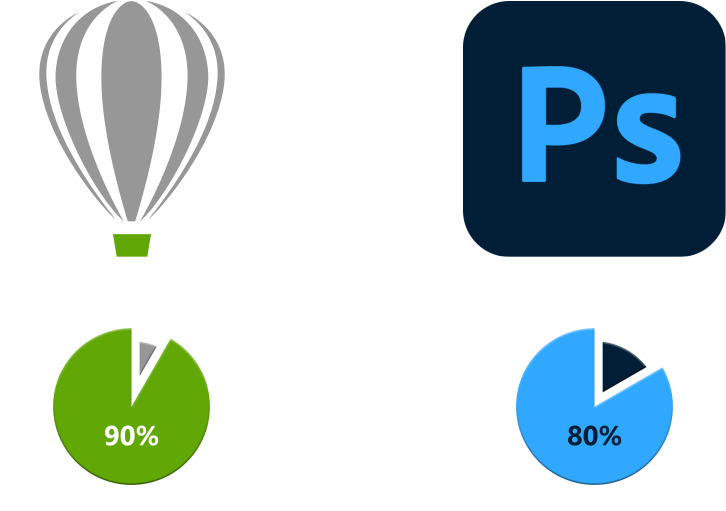

About
Saya adalah seorang Graphic Designer dari kota hujan, Bogor.
Sejak lulus dari salah satu SMK di Bogor tahun 2016, saya memfokuskan mendalami pada bidang ini sebagai pekerjaan dan hobi.
Program yang saya gunakan

Keahlian
Learn
Belum lama ini, saya lagi senang belajar web developer. mulai dar html, css, javascript. biasanya sih untuk di front-end developer kerjanya, inilah yang bikin saya suka desain grafis yang ternyata sangat luas penggunaannya.
Banyak banget keterkaitan yang saling terhubung antara desain grafis dan banyak hal, terutama pemrograman seperti yang lagi saya pelajarin saat ini.
Ya, dan ini adalah salah project website hasil develop saya sendiri, pertama kali saya buat dan publikasikan untuk memperlihatkan portofolio saya, yang juga sebagai sarana pendukung untuk jejang karir saya dikemudian hari.
Sumber tempat saya belajar website sebenarnya banyak banget, dan ini salah satunya yang sering saya kunjungi untuk belajar.